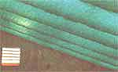
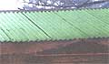
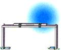

COUNTRY LORE
Your First Line of Defense Against an Aggressive Rhode Island Red
I have a small studio with a fiberglass roof. How do I insulate it? Solution ...two layers of bubble wrap, the first on top of the 2 x 4 truss, the second stapled to the bottom of the same 2 x 4. This gives me four layers of plastic with three air spaces. It also allows the light in during the day and encourages solar gain that also aids in heating. (The photo above was taken before the walls were insulated.) As a nearly free alternative to fiberglass, you can't beat it.
-Paul J. Pugliese
Long Branch, NJ
If you have free-range chickens around your place, you know that a good rooster will not only fearlessly protect the hens, but will make them happy and more productive egg layers. If you choose to incubate a new flock to replace older stock, he becomes essential. Unfortunately, a good rooster from quality breeding will also be very aggressive. Perhaps it wouldn't be as bad if they didn't have the habit of waiting until your back is turned before attacking.
My Rhode Island Red, who I named Solomon Roosty, was much too much of a handful in this department, and I grudgingly resolved to sentence him to the chopping block. The governor gave him clemency at the last moment, however, when I spied a plastic terminal used to splice electric wires together laying on the ground beside the chopping block. I found a mate to it in the junk box and screwed them on to his spurs. The size I used is commonly yellow, though the red ones will work fine on smaller spurs. Since I've put them on, he has become a quieter rooster. Even when he sneaks one on you, it doesn't do any damage. I hope this saves you a chore. Those roosters don't cook very well.
-Montana N. Dedman
Oxford, NC
Our hillside orchard has sparse soil and the trees suffer in our hot Oklahoma summers. To reduce erosion and retard rain runoff, it needed terracing. My husband was too busy with other pressing projects to help me, so I came up with this one-woman terracing tool.
All you need are three pieces of scrap 2 x 2 lumber: two pieces three feet long for "legs" and one piece six feet long for the tie member. Make a "U" of the pieces by hammering a two-inch nail through each end of the tie into a three foot leg held at 90 degrees. Don't worry if the legs seem wobbly; gravity will correct the angles when you get out into the field. In the middle of the tie piece on the top of your U, tape a carpenter's level. A four-foot level works well, as it will stiffen your tie piece.
Tote your little darling down to the slope and proceed, as follows. At one edge of the area, set a rock at the top of the slope to be terraced. Set the end of one of the legs down by the rock, and, holding the center of the tie, walk until, with both legs on the ground, the bubble gauge reads level. That's where your second marker rock goes. Using the number two rock as a new reference point, repeat the process. Continue across the slope, leaving a trail of markers as you go. When you get to the edge of the area, lay the tool down and "connect the dots" with a row of rocks. Voila! You have a terrace line. Every time we mow the orchard, we rake the clippings downslope to the nearest terrace line of rocks and God's rain carries soil to the mulch/rock barrier to complete the terracing process.
-Karen Jones
Broken Arrow, OK
The absolute best way I've ever found to clean copper is amazingly cheap, safe, and easy. Just dip a cloth in vinegar (white or cider), then dip it in salt and rub on your tarnished copper. The salt and vinegar scrubs away the tarnish and leaves the copper sparkling like new. Also, I've won dozens of bets by proving to hiccupers that I have a surefire cure. Give the victim one full teaspoon of sugar. He or she has to take it straight-no diluting. Every time I've tried it, the hiccups disappear immediately. My grandmother passed this cure on from her mother. Although a mouthful of sugar is no fun to consume, the results are worth it every time!
-Connie Dorn
Stevens Point, WI
I discovered an effective way to rid my houseplants of flying insects (like whitefly) without using pesticides or expensive fly traps. First, I assembled my materials: large paper clips and scraps of school bus yellow paper (yellow attracts insects) approximately 2"x 2". It does not have to be square. (I confess, I cut off pieces of yellow paper from my old National Geographic covers), a Popsicle stick, and my already open can of that sticky goo one spreads on tree bark to keep down insect populations (Tree Tanglefoot is one brand.). Clip the paper clip to the paper. Straighten out the larger leg of the clip and bend it around, so that half of the leg clips the paper and the other half hangs down straight off the paper. Holding this straight end, spread the tree goo in a light coat on both sides of the paper with the Popsicle stick. Then stick the straight end of the paper clip into the soil of a houseplant and you're set! Every day more insects will get trapped in your two-cent lure.
-Cheryl Semarge Moody
Signal Mountain, TN
Through the years, we've all discovered a few practical, time-tested solutions to the frustrating little problems of everyday life. Send your tips to: "Country Lore" cloMother Earth News,P.O. Box 129, Arden, N.C. 28704, or write to us via e-mail at MEarthNews@aol.com. Please include your phone number and a photo. If we use your letter, we'll be happy to send you aMOTHER EARTH NewsT-shirt!
|
 The inexpensive way to insulate! |
 |
|
|
 |
|
|